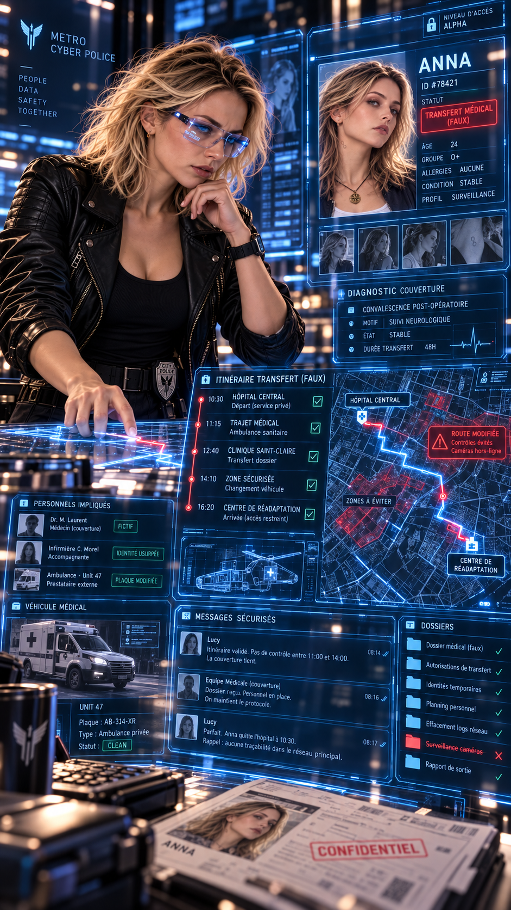
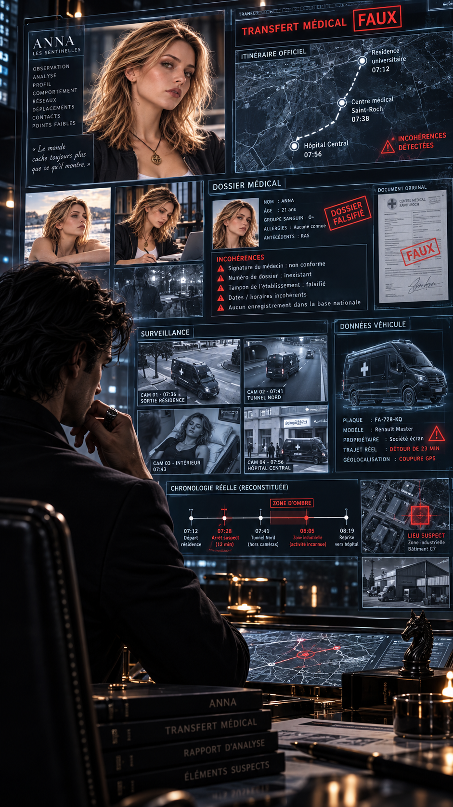
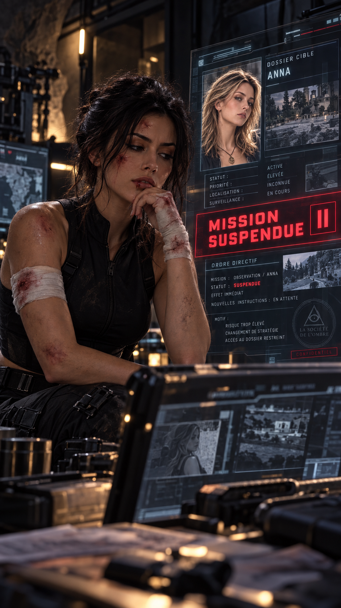
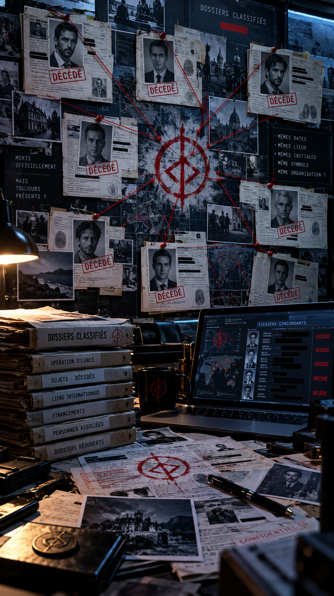
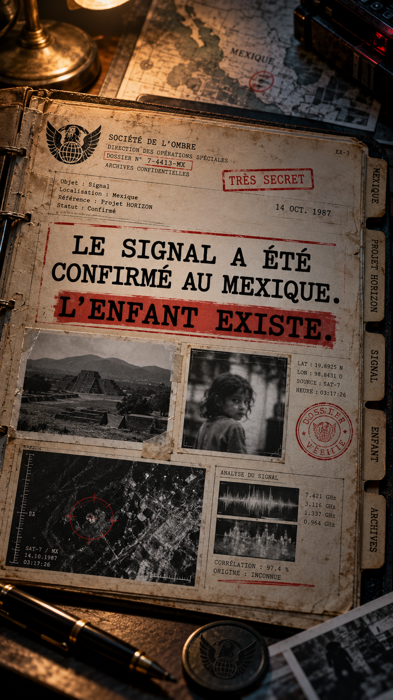

Hacienda Flores
Isabel Ortega traverse le grand hall de l’hacienda comme elle le fait depuis des années.
Même démarche.
Même sourire discret.
Même classeur contre elle.
Elle s’arrête quelques secondes pour échanger avec une employée, vérifie une livraison prévue dans l’après-midi, puis disparaît dans un couloir.
Depuis la salle de sécurité, Hale la regarde sur un écran.
Il ne dit rien.
Lucy se tient à côté de lui.
Clive, installé un peu plus loin, observe alternativement Hale et les images de vidéosurveillance.
— Tu vas finir par traverser l’écran avec ton regard.
Hale ne réagit pas.
Lucy tourne légèrement la tête.
— Il a raison.
— Je sais.
— Tu la connais depuis combien de temps ?
Hale hésite.
— Dix-huit ans.
Clive cesse de sourire.
— Dix-huit ?
— Elle est arrivée environ un an après Anna.
Lucy regarde de nouveau l’écran.
Isabel vient de s’arrêter devant une employée et lui adresse quelques mots avec un sourire.
Tout semble parfaitement normal.
— Et pendant tout ce temps, tu n’as jamais rien remarqué ?
Hale serre la mâchoire.
— Non.
Clive intervient :
— C’est justement pour ça qu’elle est bonne.
Hale lui lance un regard froid.
Clive lève immédiatement les mains.
— Ce n’était pas un reproche.
Puis il ajoute :
— Pour rester dix-huit ans dans une maison comme celle-ci sans être repérée, elle devait être irréprochable.
Lucy acquiesce.
— Pas d’excès.
— Pas d’erreur.
— Pas de comportement inhabituel.
— Rien qui donne envie qu’on regarde dans sa direction.
Hale murmure :
— Anna lui fait confiance.
Lucy le regarde.
— Je sais.
— Betty aussi.
— Je sais.
Hale détourne les yeux.
— Et moi aussi.
Un silence.
Clive se redresse.
— Alors on ne l’arrête pas.
Hale tourne brutalement la tête.
— Pardon ?
Lucy regarde Clive.
— Développe.
— Vous avez enfin trouvé une taupe qui transmet probablement des informations depuis presque deux décennies.
Il sourit légèrement.
— Et vous voulez immédiatement lui faire savoir qu’elle a été découverte ?
Hale comprend.
Clive poursuit :
— Une taupe identifiée est beaucoup plus utile qu’une taupe arrêtée.
Lucy acquiesce lentement.
— On la laisse travailler.
— Exactement.
Clive pointe l’écran.
— Elle croit toujours qu’elle nous observe.
Puis son sourire s’élargit.
— Maintenant, c’est nous qui allons l’observer.

Lucy affiche plusieurs schémas sur l’écran principal.
— Première règle : personne ne change de comportement avec elle.
Elle regarde Hale.
— Surtout toi.
— Je sais faire mon travail.
— Je n’en doute pas.
Puis elle ajoute :
— Mais toi, tu sais qu’elle a peut-être contribué à envoyer des tueurs chez Anna.
Hale ne répond pas.
Lucy poursuit :
— Si tu la regardes différemment, elle le verra.
Clive intervient :
— Et si elle est aussi bonne que je le pense, elle partira avant même qu’on sache comment.
Hale respire profondément.
— Très bien.
Lucy affiche une nouvelle page.
— Deuxième règle : on lui donne une information que personne d’autre ne possède.
Clive sourit.
— Enfin.
Hale regarde Lucy.
— Quelle information ?
— Anna quittera discrètement l’hacienda Awake après-demain matin.
— Destination ?
Lucy réfléchit.
Clive répond :
— Laboratoire de Peter.
— Trop logique.
Lucy secoue la tête.
— Justement.
Elle se tourne vers Hale.
— On dit qu’elle doit subir des examens supplémentaires à cause de ce qu’on vient d’apprendre sur sa naissance.
Hale grimace.
— Utiliser ça comme appât ne va pas me plaire.
— À moi non plus.
Lucy répond calmement :
— Anna ne bougera pas.
— Personne ne sera exposé.
— On veut seulement savoir si l’information quitte cette maison.
Clive ajoute :
— Et surtout où elle va.
Hale réfléchit.
— Comment Isabel va l’apprendre ?
Lucy sourit légèrement.
— Naturellement.
— Je vais demander que son service organise un véhicule et modifie un planning.
Clive acquiesce.
— Pas de message secret.
— Pas de rendez-vous suspect.
— Juste son travail.
Lucy poursuit :
— Et IA2 surveillera tout ce qu’elle peut.
Clive ajoute :
— Et moi tout ce qu’IA2 ne peut pas voir.
Lucy le regarde.
— Comme quoi ?
— Comme la manière dont un être humain intelligent transmet une information lorsqu’il sait que les systèmes numériques peuvent être surveillés.
Hale demande :
— Tu penses qu’elle utilise un intermédiaire physique ?
— Peut-être.
Clive sourit.
— Ou quelque chose d’encore plus simple.
Lucy soupire.
— Je déteste quand tu prends cet air.
— C’est parce que tu sais que j’ai souvent raison.
— Occasionnellement.
Hacienda Awake
Anna est assise seule à l’extérieur.
Devant elle, le jardin descend doucement vers une zone boisée.
Elle tient une tasse qu’elle ne boit pas.
Max arrive sans bruit.
Il s’installe sur le muret, à quelques mètres d’elle.
Il ne parle pas.
Anna finit par tourner la tête.
— Tu n’as rien à dire ?
— Si.
— Alors pourquoi tu ne dis rien ?
— Parce que je ne sais pas encore si tu veux parler ou seulement ne pas être seule.
Anna regarde de nouveau devant elle.
— Peut-être les deux.
Max acquiesce.
— Très bien.
Silence.
Puis Anna demande :
— Tu savais ?
— Non.
— Root ?
— Non.
— Hope ?
— Elle le soupçonnait depuis ce qu’elle a découvert dans la grotte.
Anna baisse les yeux.
— Et Peter ?
Max hésite.
— Je ne pense pas.
Anna remarque immédiatement la nuance.
— Tu ne penses pas ?
— Peter connaît certaines recherches de ta mère qu’il n’aurait probablement jamais dû voir.
Anna soupire.
— Génial.
Elle laisse échapper un petit rire nerveux.
— Plus je pose de questions, plus ma vie devient bizarre.
Max sourit.
— C’est malheureusement une caractéristique assez fréquente de la vérité.
Anna le regarde.
— C’est ça, être journaliste ?
— Une partie.
— Découvrir que ce qu’on croyait vrai ne l’était pas ?
— Souvent.
Anna réfléchit.
Puis :
— Si toute mon histoire commence par une expérience…
Elle s’arrête.
Max attend.
— Comment je sais ce qui est vraiment moi ?
Max ne répond pas tout de suite.
Puis il désigne sa tasse.
— Tu aimes le café ?
— Non.
— Ta mère ?
— Beaucoup trop.
— Donc manifestement, la génétique n’explique déjà pas tout.
Anna sourit malgré elle.
Max poursuit :
— Ton origine peut expliquer pourquoi tu existes.
— Elle peut peut-être expliquer certaines capacités.
— Certaines réactions.
— Certaines particularités.
Il la regarde.
— Mais elle ne décide pas de ce que tu fais de tout ça.
Anna reste silencieuse.
— Si quelqu’un découvre qu’il est né avec un talent exceptionnel pour courir, poursuit Max, cela ne lui dit pas s’il doit devenir athlète, pompier ou ne jamais courir de sa vie.
— C’est lui qui choisit.
Anna le regarde.
— Donc tu penses que je suis libre ?
Max sourit.
— J’espère bien.
— Sinon mon métier ne sert plus à grand-chose.
Hope apparaît au bout du chemin.
Elle avance encore avec une légère raideur.
Max se lève.
— Je vais vous laisser.
Anna le regarde.
— Tu fuis ?
— Je sais reconnaître quand une conversation ne me concerne pas.
Il se tourne vers Hope.
— Essaie de ne pas lui révéler l’existence d’une nouvelle civilisation extraterrestre avant le déjeuner.
Hope sourit.
— Je vais essayer.
Max s’éloigne.
Hope s’installe près d’Anna.
— Comment ça va ?
— Question idiote.
— Probablement.
Anna regarde Hope.
— Est-ce que j’ai le droit d’être en colère contre elle ?
— Oui.
La réponse est immédiate.
Anna semble surprise.
Hope poursuit :
— Tu as même le droit d’être furieuse.
— De ne pas vouloir lui parler.
— De lui en vouloir.
— D’avoir besoin de temps.
Anna baisse les yeux.
— Mais elle voulait me protéger.
— Oui.
— Donc je devrais comprendre.
Hope secoue la tête.
— Comprendre n’oblige pas à pardonner immédiatement.
Anna relève les yeux.
Hope ajoute :
— Et pardonner un jour ne signifie pas que ce qu’elle a fait était juste.
Anna reste silencieuse.
Puis :
— Tu crois vraiment que je suis ce truc dont parlent les fresques ?
— L’Équilibre ?
Anna acquiesce.
Hope réfléchit.
— Je crois que quelque chose te relie à ces fresques.
— Et à la fiole.
— Mais je refuse de décider à ta place ce que ça signifie.
— Maître Lee ferait pareil ?
Hope sourit.
— Non.
Anna rit légèrement.
— Au moins tu es honnête.
— Toujours quand ça m’arrange.
Anna reprend son sérieux.
— Et si les Gardiens ont raison ?
Hope fronce les sourcils.
— À propos de quoi ?
— Si je peux vraiment devenir dangereuse.
Hope la regarde longuement.
— Tout le monde peut devenir dangereux.
— Ça dépend des moyens qu’il possède.
— Et des choix qu’il fait.
Elle s’approche légèrement.
— Le danger n’est pas ce que tu pourrais devenir.
— Le danger serait que quelqu’un d’autre décide à ta place de ce que tu dois devenir.
Anna pense à ces mots.
Hope ajoute :
— C’est précisément pour ça que je te protégerai.
Anna sourit.
— Jusqu’à quand ?
Hope répond sans hésiter :
— Jusqu’au jour où tu n’auras plus besoin de moi.
Anna ne répond pas.
Mais quelque chose dans cette phrase lui plaît.
Sierra Madre Oriental — Hidalgo
Hacienda de la Sierra
Le domaine semble presque endormi.
Perdu entre les montagnes.
Une ancienne hacienda restaurée avec un soin remarquable.
Pierre sombre.
Bois ancien.
Jardins parfaitement entretenus.
Aucun signe extérieur ne laisse penser que sous le bâtiment principal s’étend un réseau de galeries beaucoup plus ancien que la propriété elle-même.
Dans l’une de ces salles souterraines, un homme lit un rapport.
On ne voit pas clairement son visage.
La lumière éclaire seulement ses mains.
Et l’écran devant lui.
Un homme entre.
— Maître.
Le Maître Noir ne relève pas la tête.
— Isabel ?
— Toujours en place.
— Soupçonnée ?
— Nous n’avons aucune confirmation.
Le Maître Noir fait défiler plusieurs informations.
Puis :
— Ils ont trouvé les anciens rapports.
Son interlocuteur se fige.
— Comment le savez-vous ?
— Parce qu’ils ont changé leur comportement.
— Isabel ne l’a pas signalé.
— Ce n’est pas elle que j’observe.
Silence.
Le Maître Noir relève enfin légèrement la tête.
— Hale.
— Lucy Adverse.
— Clive Lynx.
Il ferme le rapport.
— Trois personnes intelligentes dans la même maison.
— Elles finiront forcément par comprendre.
— Alors nous retirons Isabel ?
— Non.
Le lieutenant semble surpris.
— Pourquoi ?
Le Maître Noir sourit légèrement.
— Parce que s’ils l’ont découverte, ils vont essayer de l’utiliser.

Au même moment, une notification arrive sur l’écran.
Un changement de planning.
A.F. — transfert médical exceptionnel — dans deux jours.
Le lieutenant s’approche.
— Anna va se déplacer.
Le Maître Noir ne réagit pas.
Il lit le message.
Une seconde fois.
Puis :
— Non.
— Maître ?
— Trop propre.
Il pose la tablette.
— Trop logique.
— Trop facile.
Le lieutenant comprend.
— Un piège.
— Probablement.
— Vous voulez que nous ignorions l’information ?
Le Maître Noir secoue lentement la tête.
— Surtout pas.
Il sourit.
— Nous allons leur laisser croire que nous mordons à l’hameçon.
Le lieutenant attend.
— Préparez une équipe.
— Pour Anna ?
— Non.
Le Maître Noir se lève.
— Pour ceux qui surveillent Isabel.
Un silence.
— Je veux savoir jusqu’où Lucy Adverse et Clive Lynx sont capables de remonter.
Il marche lentement vers une carte du Mexique gravée dans la pierre.
— Et surtout…
Il pose un doigt sur l’emplacement de l’hacienda Flores.
— je veux savoir ce que Hale sait réellement.
Le lieutenant hésite.
— Et Anna ?
— Personne ne la touche.
— Pour le moment.
— Amy ?
Le Maître Noir reste silencieux quelques secondes.
Puis :
— Mission suspendue.
— Elle ne va pas apprécier.
— Amy n’est pas payée pour apprécier.
Il se retourne.
— Elle est payée pour obéir.

Quelque part dans l’État de San Luis Potosí
Amy ouvre les yeux.
Elle est allongée sur un lit.
Son épaule est bandée.
Plusieurs ecchymoses couvrent son corps.
Elle observe le plafond quelques secondes.
Puis tente de se relever.
— Mauvaise idée.
Un homme assis dans un fauteuil la regarde.
Amy tourne lentement la tête.
— Qui es-tu ?
— Celui qui t’a évité de te noyer.
— Donc je suppose que je dois te remercier.
— Ce serait déjà un début.
Amy s’assoit malgré la douleur.
— Où est Hope ?
L’homme hausse les épaules.
— Aucune idée.
Amy le fixe.
— Mauvaise réponse.
— C’est pourtant la seule que j’ai.
Amy regarde autour d’elle.
— Qui m’a récupérée ?
— Des hommes qui travaillent pour ton employeur.
— Mon employeur n’aime pas que ses employés connaissent trop de choses.
L’homme sourit.
— Alors évite de poser trop de questions.
Amy repère sa tablette sur une table.
Elle tend la main.
L’homme n’essaie pas de l’en empêcher.
Un message l’attend.
MISSION A.F. SUSPENDUE.
Amy reste parfaitement immobile.
Puis elle relit.
Une deuxième fois.
— Suspendue ?
L’homme répond :
— Ordre direct.
Amy serre la tablette.
— Pourquoi ?
— Je n’en sais rien.
— Décidément, tu sais très peu de choses.
— C’est probablement pour ça que je suis encore vivant.
Amy repose la tablette.
Son visage s’est fermé.
— Où est Hope ?
— Toujours aucune idée.
Amy se lève.
— Tu ne devrais vraiment pas…
— Je vais très bien.
Elle manque immédiatement de perdre l’équilibre.
L’homme la rattrape.
Amy le repousse.
— Ne me touche pas.
Puis elle murmure :
— Ils pensent vraiment que ça s’arrête là ?
— Quoi ?
Amy regarde la photographie d’Anna toujours affichée sur l’écran.
— Rien.
Mais son regard dit exactement le contraire.
Cette histoire ne s’arrête plus avec un ordre.
Anna est devenue son affaire. Et Hope aussi.
Hacienda Flores
Le soir est tombé.
Isabel termine son service.
Elle salue Hale en passant.
— Bonne soirée.
Hale lui répond exactement comme il le fait depuis des années.
— Bonne soirée, Isabel.
Elle sourit.
Puis s’éloigne.
Hale attend qu’elle ait disparu.
Lucy apparaît derrière lui.
— Bien joué.
— J’ai envie de l’arrêter.
— Je sais.
Clive les rejoint.
— Et moi, j’ai envie de savoir comment elle communique.
Lucy regarde son écran.
— Pour l’instant, rien.
— Aucun appel inhabituel.
— Aucun message.
— Aucun accès réseau suspect.
Clive sourit.
— Donc elle est vraiment bonne.
Lucy soupire.
— Arrête d’avoir l’air admiratif.
— Je respecte les professionnels.
Hale demande :
— Tu as trouvé quelque chose ?
— Peut-être.
Clive sort un petit objet de sa poche.
Une photographie.
— Elle s’est arrêtée quinze secondes devant l’ancien oratoire du jardin.
Lucy fronce les sourcils.
— Et ?
— Elle ne prie jamais.
Hale répond :
— Comment tu peux savoir ça ?
— Je l’observe depuis deux jours.
Clive poursuit :
— Elle est entrée.
— Elle a déplacé une bougie.
— Puis elle est repartie.
Lucy le regarde.
— Tu penses à une cache ?
— Peut-être.
Hale se dirige immédiatement vers la porte.
Clive le retient.
— Non.
— Pourquoi ?
— Parce qu’elle saura que quelqu’un l’a fouillée.
Lucy acquiesce.
— On attend.
Plus tard dans la nuit, Clive retourne seul dans l’oratoire.
Pas de lumière.
Pas de caméra visible.
Il examine le meuble.
La bougie.
La pierre.
Puis sourit.
Une minuscule cavité est dissimulée derrière une plaque de bois.
Vide.
Clive observe.
— Dépôt mort.
Lucy l’entend via son oreillette.
— Quoi ?
— Un endroit où elle dépose quelque chose.
— Quelqu’un vient le récupérer sans qu’ils aient besoin de se rencontrer.
Hale murmure :
— Donc on peut attendre celui qui vient chercher.
Clive sourit.
— Exactement.

Puis Clive remarque quelque chose.
Une infime marque au fond de la cavité.
Un symbole.
Il photographie.
Lucy agrandit immédiatement l’image.
Son visage change.
— Hale…
— Quoi ?
— J’ai déjà vu quelque chose de similaire.
— Où ?
— Dans les dossiers des hommes officiellement morts.
Silence.
Lucy retourne vers IA2.
— Analyse ce symbole.
ANALYSE EN COURS.
Clive rejoint la salle de sécurité.
Hale attend.

Une première série de correspondances apparaît.
Puis une autre.
Pas de résultat définitif.
Mais plusieurs documents anciens.
Plusieurs identifiants.
Des transmissions bien antérieures à Isabel.
Lucy fronce les sourcils.
— Attendez.
Elle ouvre un fichier.
Hale s’approche.
— Quelle date ?
Lucy ne répond pas immédiatement.
Elle vérifie.
Puis une seconde fois.
— Isabel n’était pas encore ici.
Clive cesse de sourire.
Le fichier date de dix-neuf ans plus tôt.
Quelques mois seulement après la naissance d’Anna.
Hale pâlit.
— Ouvre.
Lucy s’exécute.
Le contenu est extrêmement court.
Une seule phrase.
LE SIGNAL A ÉTÉ CONFIRMÉ AU MEXIQUE. L’ENFANT EXISTE.
Silence.
Hale fixe l’écran.
Lucy fait défiler les métadonnées.
— Origine inconnue.
— Destinataire ?
— Masqué.
Clive regarde Hale.
— Donc Isabel n’était pas la première.
Hale ne répond pas.
Lucy poursuit la recherche.
Une autre trace apparaît.
Encore plus ancienne.
Cette fois, quelques jours seulement après la naissance d’Anna.
Un identifiant.
Puis une série de coordonnées partiellement effacées.
Et un terme.
RÉACTIVATION.
Hale recule légèrement.
Lucy le remarque.
— Tu connais ce mot.
Hale hésite.
Puis regarde son poignet.
Pendant dix-neuf ans, le symbole des Sentinelles y est resté dissimulé.
Mais il se souvient parfaitement du premier jour où il est apparu.
Du jour où Anna est née.
Lucy comprend à son expression.
— Hale ?
Il relève lentement les yeux.
— Le jour où Anna est arrivée…
Sa voix devient plus basse.
— ma marque est apparue.
Clive regarde Lucy.
Lucy ne dit plus rien.
Hale poursuit :
— Maître Lee m’avait envoyé ici pour surveiller une fiole.
— Pas un enfant.
Il regarde le message.
LE SIGNAL A ÉTÉ CONFIRMÉ AU MEXIQUE. L’ENFANT EXISTE.
— Puis Anna est née.
Silence.
Lucy murmure :
— Et quelqu’un, quelque part, l’a su presque immédiatement.
Hale serre les mâchoires.
— Oui.
Clive regarde l’écran.
— Alors la vraie question n’est plus de savoir depuis combien de temps Isabel espionne Anna.
Lucy acquiesce.
— Mais comment ils ont su qu’elle existait avant même d’avoir quelqu’un à l’intérieur.
Hacienda de la Sierra — Hidalgo
Le Maître Noir se tient seul devant un immense mur de pierre.
Au centre :
le même symbole.
Une lumière discrète apparaît.
Puis une voix électronique.
— ANOMALIE DÉTECTÉE.
Il tourne lentement la tête.
— Où ?
— HACIENDA FLORES.
Le Maître Noir sourit.
— Ils remontent le fil.
Quelques secondes passent.
— Et Hale ?
— ACTIF.
Le sourire disparaît.
— Alors il se souvient.
Il approche une main du symbole.
— Intéressant.
Puis il murmure :
— Voyons jusqu’où Maître Lee lui a dit la vérité.
Derrière lui, une porte s’ouvre.
Un homme entre.
— Maître.
— Oui ?
— Nous avons retrouvé une trace liée au premier signal.
Le Maître Noir se retourne.
— Où ?
L’homme hésite.
— Pas au Mexique.
Silence.
— Alors où ?
L’homme lui tend la tablette.
Le Maître Noir regarde l’écran.
Son expression change pour la première fois.
— Impossible…
Puis son regard se durcit.
— Préparez mon départ.
— Pour où ?
Il relève lentement les yeux.
— Là où tout a commencé.